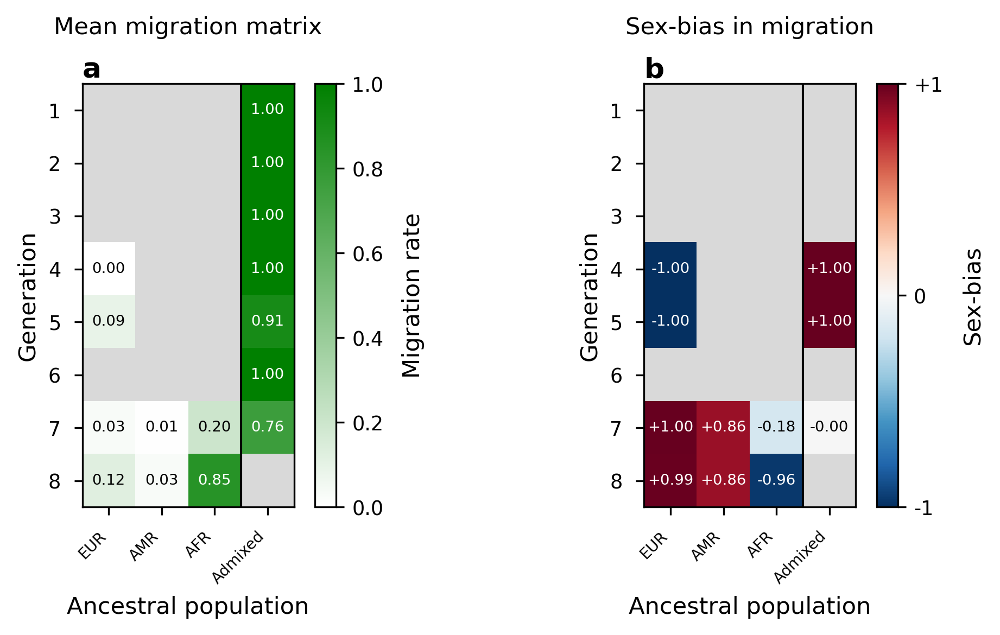
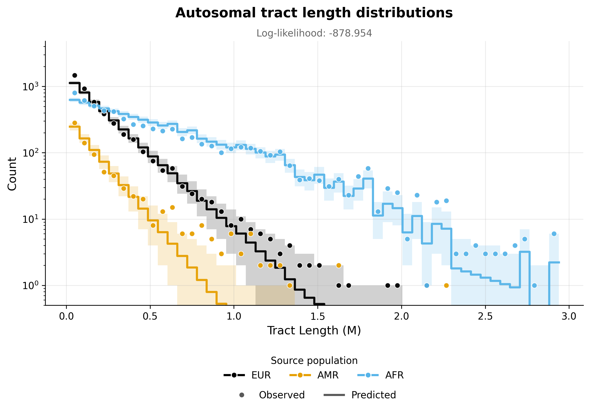
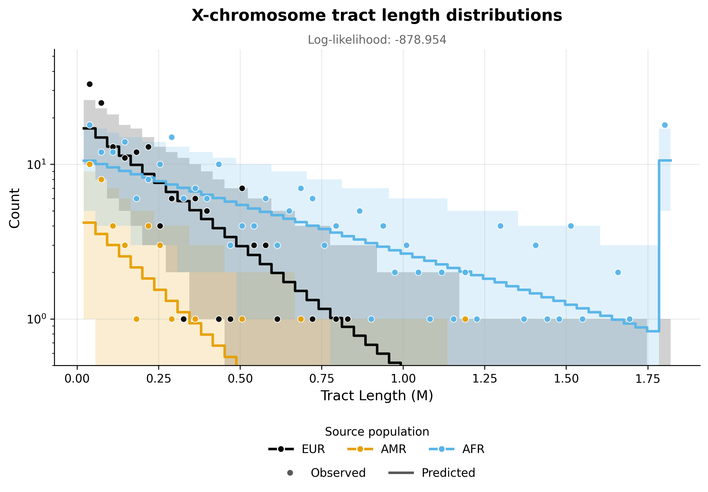

Note
Go to the end to download the full example code.
ASW inference - Two pulses model#
This example implements inference for the ASW population under a two pulses model of admixture, using the tracts package. Inference is performed using autosomal and X chromosome data, allowing for the specification of sex-biased admixture.
To implement this example, we use the following driver file:
samples:
directory: ./ASW_TrioPhased
individual_names: [
"NA19625","NA19700","NA19701","NA19703","NA19704","NA19707","NA19711","NA19712","NA19713","NA19818","NA19819",
"NA19834","NA19835","NA19900","NA19901","NA19904","NA19908","NA19909","NA19913","NA19914","NA19916","NA19917",
"NA19920","NA19921","NA19922","NA19923","NA19982","NA19984","NA20126","NA20127","NA20274","NA20276","NA20278",
"NA20281","NA20282","NA20287","NA20289","NA20291","NA20294","NA20296","NA20298","NA20299","NA20314","NA20317",
"NA20318","NA20320","NA20321","NA20332","NA20334","NA20339","NA20340","NA20342","NA20346","NA20348","NA20351",
"NA20355","NA20356","NA20357","NA20359","NA20362","NA20412"]
male_names : [
"NA19700","NA19703","NA19711","NA19818","NA19834","NA19900","NA19904","NA19908","NA19916","NA19920",
"NA19922","NA19982","NA19984","NA20126","NA20278","NA20281","NA20291","NA20298","NA20318","NA20340",
"NA20342","NA20346","NA20348","NA20351","NA20356","NA20362"] #see Readme_dataprocessing.md for how this was generated
filename_format: "{name}_{label}_final.bed"
labels: [A, B] #If this field is omitted, 'A' and 'B' will be used by default
chromosomes: 1-22 #The chromosomes to use for analysis. Can be specified as a list or a range
allosomes: [X]
models:
model_filename: ../models/ppp_pxx.yaml
ad_model_autosomes: M
ad_model_allosomes: DC
start_params:
t1: 14:16
REUR: 0.1:0.9
REUR_sex_bias: 0.1:0.3
t2: 4:8
REUR2: 0.1:0.8
REUR2_sex_bias: 0.1:0.3
RAMR: 0.1:0.9
RAMR_sex_bias: 0.1:0.3
optim:
repetitions: 3
seed: 100
maximum_iterations: 1000
npts: 50
exclude_tracts_below_cm: 2
unknown_labels_for_smoothing: ["UNK", "centromere","miscall"] # segments with these labels will be smoother over, that is, will be filled with neighbouring ancestries up to their midpoints.
n_reoptimizations: 5
rerun_optimization_on_boundaries: False
output:
output_directory: ./output_two_pulses/
output_filename_format: "ASW_test_output_{label}"
log_filename: 'ASW_two_pulses.log'
verbose_log: 1
verbose_screen: 30
log_scale: True
Complete results from this analysis are saved in the output directory specified in the driver file. Below, we display the optimal parameters estimated from this analysis, as well as the plots illustrating the inferred tract length distributions, compared to the observed histograms, for every source population and chromosome type (autosomes and X chromosome).
Optimal parameters#
parameter |
value |
|---|---|
REUR |
0.1466815795233779 |
REUR_sex_bias |
0.9596205316398558 |
RAMR |
0.029236640969082184 |
RAMR_sex_bias |
0.9657932933392261 |
t1 |
7.549394840254808 |
REUR2 |
0.05414234740488229 |
REUR2_sex_bias |
-0.93596597884206 |
t2 |
5.016249470689438 |
X_AFR_rate |
0.8240817795075399 |
X_AFR_sex_bias |
-0.9606464106936968 |
likelihood -878.954 |
Optimal migration matrices#


Tract length histograms#
Autosomal admixture#


X chromosome admixture#


------------------------------------------------------------------------------------------------
Running tracts 2.0 with driver file: /home/runner/work/tracts/tracts/example/documentation_examples/ASW/ASW_two_pulses.yaml
------------------------------------------------------------------------------------------------
Results will be written to: output_two_pulses.
Using log file: output_two_pulses/ASW_two_pulses.log.
excluding_tracts_below set to 2.0 cM.
Re-optimization will be performed until convergence or maximum 5 times.
Ancestries: EUR, AMR, AFR
Data autosome proportions: [0.19578862 0.03825495 0.76595643]
Data allosome proportions: [0.16839124 0.03818939 0.79341937]
Model parameters and bounds:
--------------------------------------------
Parameter | Lower bound | Upper bound
--------------------------------------------
REUR | 1e-09 | 1
REUR_sex_bias | -1 | 1
RAMR | 1e-09 | 1
RAMR_sex_bias | -1 | 1
t1 | 1 | inf
REUR2 | 1e-09 | 1
REUR2_sex_bias | -1 | 1
t2 | 1 | inf
--------------------------------------------
Multiple starting parameters will be generated and used for multiple optimization runs.
-----------------------------------------------------------------------------------------------
Step 1 : Optimizing autosomal likelihood over parameters ['REUR', 'RAMR', 't1', 'REUR2', 't2'].
-----------------------------------------------------------------------------------------------
Starting parameters for step 1 optimization
------------------------------------------------------------------------------
Run | REUR | RAMR | t1 | REUR2 | t2
------------------------------------------------------------------------------
1 | 0.3197 | 0.1117 | 14.14 | 0.4669 | 4.909
2 | 0.4537 | 0.3424 | 15.41 | 0.6505 | 6.681
3 | 0.5082 | 0.3643 | 15.33 | 0.2343 | 6.998
------------------------------------------------------------------------------
Optimization run #1
Iter. Log-likelihood Model parameters Transmission
-------------------------------------------------------------
30 , -10085.8 , array([ 0.310623 , 0 , 0.108834 , 0 , 11.7325 , 0.473689 , 0 , 4.73203 ]), Autosomes
60 , -6657.07 , array([ 0.295726 , 0 , 0.104309 , 0 , 9.16813 , 0.470892 , 0 , 4.46589 ]), Autosomes
90 , -4568.63 , array([ 0.273992 , 0 , 0.0996824 , 0 , 7.40648 , 0.45933 , 0 , 4.06512 ]), Autosomes
120 , -3474.65 , array([ 0.250604 , 0 , 0.0950853 , 0 , 6.26933 , 0.427149 , 0 , 3.7061 ]), Autosomes
150 , -2777.56 , array([ 0.226178 , 0 , 0.0895155 , 0 , 5.76192 , 0.378352 , 0 , 3.45012 ]), Autosomes
180 , -2254.89 , array([ 0.203161 , 0 , 0.0832351 , 0 , 5.82132 , 0.32692 , 0 , 3.36864 ]), Autosomes
210 , -1869.31 , array([ 0.18628 , 0 , 0.0775139 , 0 , 6.05288 , 0.282467 , 0 , 3.36102 ]), Autosomes
240 , -1508.01 , array([ 0.166545 , 0 , 0.0695028 , 0 , 6.40087 , 0.243117 , 0 , 3.4481 ]), Autosomes
270 , -1218.07 , array([ 0.150995 , 0 , 0.0613027 , 0 , 6.70906 , 0.206067 , 0 , 3.52482 ]), Autosomes
300 , -1003.69 , array([ 0.138999 , 0 , 0.0531144 , 0 , 6.95436 , 0.175813 , 0 , 3.67288 ]), Autosomes
330 , -846.2 , array([ 0.129741 , 0 , 0.0458198 , 0 , 7.44536 , 0.153852 , 0 , 3.76605 ]), Autosomes
360 , -725.644 , array([ 0.124571 , 0 , 0.0391915 , 0 , 7.74168 , 0.129236 , 0 , 3.96135 ]), Autosomes
390 , -661.984 , array([ 0.120431 , 0 , 0.0351969 , 0 , 7.75864 , 0.115534 , 0 , 4.36073 ]), Autosomes
420 , -623.132 , array([ 0.118737 , 0 , 0.0320934 , 0 , 7.76819 , 0.10123 , 0 , 4.83842 ]), Autosomes
450 , -609.309 , array([ 0.121345 , 0 , 0.0306113 , 0 , 7.80102 , 0.0898132 , 0 , 5.03411 ]), Autosomes
480 , -599.893 , array([ 0.122108 , 0 , 0.0297429 , 0 , 7.56073 , 0.0817517 , 0 , 5.52492 ]), Autosomes
510 , -597.002 , array([ 0.126287 , 0 , 0.0300954 , 0 , 7.55648 , 0.0784574 , 0 , 5.60047 ]), Autosomes
540 , -595.99 , array([ 0.1281 , 0 , 0.0300918 , 0 , 7.53662 , 0.0758315 , 0 , 5.59589 ]), Autosomes
570 , -595.383 , array([ 0.129369 , 0 , 0.0300873 , 0 , 7.54091 , 0.0743154 , 0 , 5.59107 ]), Autosomes
600 , -594.86 , array([ 0.130316 , 0 , 0.0300288 , 0 , 7.55012 , 0.0728689 , 0 , 5.57538 ]), Autosomes
630 , -594.208 , array([ 0.131754 , 0 , 0.029966 , 0 , 7.5429 , 0.0712314 , 0 , 5.53582 ]), Autosomes
660 , -593.796 , array([ 0.132657 , 0 , 0.0299509 , 0 , 7.5387 , 0.0701485 , 0 , 5.50845 ]), Autosomes
690 , -593.418 , array([ 0.133684 , 0 , 0.0299003 , 0 , 7.53946 , 0.0692457 , 0 , 5.47226 ]), Autosomes
720 , -593.02 , array([ 0.134585 , 0 , 0.0298089 , 0 , 7.53557 , 0.0681562 , 0 , 5.47203 ]), Autosomes
750 , -592.513 , array([ 0.135689 , 0 , 0.0298167 , 0 , 7.53267 , 0.0667895 , 0 , 5.43715 ]), Autosomes
780 , -592.181 , array([ 0.136462 , 0 , 0.0298178 , 0 , 7.536 , 0.0659304 , 0 , 5.41498 ]), Autosomes
810 , -591.819 , array([ 0.137244 , 0 , 0.0297611 , 0 , 7.5409 , 0.0649555 , 0 , 5.39235 ]), Autosomes
840 , -591.457 , array([ 0.138089 , 0 , 0.0297092 , 0 , 7.54199 , 0.0639859 , 0 , 5.36631 ]), Autosomes
870 , -591.117 , array([ 0.138869 , 0 , 0.0296854 , 0 , 7.54326 , 0.0630632 , 0 , 5.34142 ]), Autosomes
900 , -590.774 , array([ 0.139713 , 0 , 0.0296419 , 0 , 7.54081 , 0.0621417 , 0 , 5.31531 ]), Autosomes
930 , -590.429 , array([ 0.140466 , 0 , 0.0296161 , 0 , 7.54154 , 0.0611915 , 0 , 5.28722 ]), Autosomes
960 , -590.09 , array([ 0.141175 , 0 , 0.0295825 , 0 , 7.54397 , 0.0602429 , 0 , 5.25981 ]), Autosomes
990 , -589.759 , array([ 0.141938 , 0 , 0.0295394 , 0 , 7.5434 , 0.0593271 , 0 , 5.23084 ]), Autosomes
Step 1: COBYLA stopped after 1000 objective evaluations: the evaluation limit (maximum_iterations = 1000) was reached, so the optimizer may not have converged.
1000 , -589.649 , array([ 0.142227 , 0 , 0.0295323 , 0 , 7.5433 , 0.0590284 , 0 , 5.22111 ]), Autosomes
Optimization completed.
-----------------------
Optimization run #2
Iter. Log-likelihood Model parameters Transmission
-------------------------------------------------------------
30 , -24859.5 , array([ 0.438009 , 0 , 0.329853 , 0 , 13.0935 , 0.65459 , 0 , 6.52655 ]), Autosomes
60 , -18148.7 , array([ 0.419447 , 0 , 0.311351 , 0 , 10.3356 , 0.651948 , 0 , 6.36149 ]), Autosomes
90 , -13763.9 , array([ 0.401272 , 0 , 0.295523 , 0 , 8.34593 , 0.645941 , 0 , 5.95576 ]), Autosomes
120 , -10409.9 , array([ 0.376927 , 0 , 0.274532 , 0 , 6.80696 , 0.629157 , 0 , 5.7547 ]), Autosomes
150 , -10229.4 , array([ 0.375372 , 0 , 0.274716 , 0 , 6.72585 , 0.630028 , 0 , 5.72571 ]), Autosomes
Step 1: COBYLA stopped after 156 objective evaluations without converging: Did not converge to a solution satisfying the constraints. See `maxcv` for magnitude of violation. (status 4).
156 , -10229.4 , array([ 0.375363 , 0 , 0.274708 , 0 , 6.72591 , 0.630036 , 0 , 5.72547 ]), Autosomes
Optimization completed.
-----------------------
Optimization run #3
Iter. Log-likelihood Model parameters Transmission
-------------------------------------------------------------
30 , -28604.4 , array([ 0.497709 , 0 , 0.353304 , 0 , 12.7118 , 0.234619 , 0 , 6.94258 ]), Autosomes
60 , -19943.6 , array([ 0.480057 , 0 , 0.337332 , 0 , 10.1667 , 0.236442 , 0 , 6.8943 ]), Autosomes
90 , -13996.9 , array([ 0.470391 , 0 , 0.328142 , 0 , 8.03828 , 0.239737 , 0 , 6.75541 ]), Autosomes
120 , -12861.4 , array([ 0.465722 , 0 , 0.324512 , 0 , 7.73666 , 0.238532 , 0 , 6.72399 ]), Autosomes
Step 1: COBYLA converged after 140 objective evaluations: the trust-region radius reached its final value (rhoend).
140 , -12828.4 , array([ 0.465647 , 0 , 0.324436 , 0 , 7.72632 , 0.238546 , 0 , 6.72567 ]), Autosomes
Optimization completed.
-----------------------
In Step 1: Results from multiple optimization runs with different starting parameters:
----------------------------------------------------------------------------------------------------------------------------------------------
Run | LogLik | REUR | REUR_sex_bias | RAMR | RAMR_sex_bias | t1 | REUR2 | REUR2_sex_bias | t2
----------------------------------------------------------------------------------------------------------------------------------------------
1 | -589.649 | 0.1422 | 0 | 0.02953 | 0 | 7.543 | 0.05903 | 0 | 5.221
2 | -10229.4 | 0.3754 | 0 | 0.2747 | 0 | 6.726 | 0.63 | 0 | 5.725
3 | -12828.4 | 0.4656 | 0 | 0.3244 | 0 | 7.726 | 0.2385 | 0 | 6.726
----------------------------------------------------------------------------------------------------------------------------------------------
Selecting best parameters from step 1 and proceeding to step 2 optimization.
----------------------------------------------------------------------------------------------------------------
Step 2 : Optimizing allosomal likelihood over parameters : ['REUR_sex_bias', 'RAMR_sex_bias', 'REUR2_sex_bias'].
----------------------------------------------------------------------------------------------------------------
Starting parameters for step 2 optimization (non-sex-bias parameters are fixed to the best step 1 estimates).
-------------------------------------------------------------------------------------------------------------------------------
Run | REUR | REUR_sex_bias | RAMR | RAMR_sex_bias | t1 | REUR2 | REUR2_sex_bias | t2
-------------------------------------------------------------------------------------------------------------------------------
1 | 0.1422 | 0.2193 | 0.02953 | 0.1086 | 7.543 | 0.05903 | 0.2581 | 5.221
2 | 0.1422 | 0.138 | 0.02953 | 0.1569 | 7.543 | 0.05903 | 0.22 | 5.221
3 | 0.1422 | 0.2004 | 0.02953 | 0.1988 | 7.543 | 0.05903 | 0.1787 | 5.221
-------------------------------------------------------------------------------------------------------------------------------
Optimization run #1
Iter. Log-likelihood Model parameters Transmission
-------------------------------------------------------------
30 , -203.173 , array([ 0.142227 , 0.318877 , 0.0295323 , 0.186888 , 7.5433 , 0.0590284 , 0.245988 , 5.22111 ]), Female allosomes
30 , -96.8327 , array([ 0.142227 , 0.318877 , 0.0295323 , 0.186888 , 7.5433 , 0.0590284 , 0.245988 , 5.22111 ]), Male allosomes
60 , -201.514 , array([ 0.142227 , 0.41886 , 0.0295323 , 0.272193 , 7.5433 , 0.0590284 , 0.226142 , 5.22111 ]), Female allosomes
60 , -97.2683 , array([ 0.142227 , 0.41886 , 0.0295323 , 0.272193 , 7.5433 , 0.0590284 , 0.226142 , 5.22111 ]), Male allosomes
90 , -200.089 , array([ 0.142227 , 0.505029 , 0.0295323 , 0.357929 , 7.5433 , 0.0590284 , 0.198424 , 5.22111 ]), Female allosomes
90 , -97.6747 , array([ 0.142227 , 0.505029 , 0.0295323 , 0.357929 , 7.5433 , 0.0590284 , 0.198424 , 5.22111 ]), Male allosomes
120 , -198.869 , array([ 0.142227 , 0.579851 , 0.0295323 , 0.439353 , 7.5433 , 0.0590284 , 0.162823 , 5.22111 ]), Female allosomes
120 , -98.0452 , array([ 0.142227 , 0.579851 , 0.0295323 , 0.439353 , 7.5433 , 0.0590284 , 0.162823 , 5.22111 ]), Male allosomes
150 , -197.85 , array([ 0.142227 , 0.640703 , 0.0295323 , 0.514825 , 7.5433 , 0.0590284 , 0.109529 , 5.22111 ]), Female allosomes
150 , -98.349 , array([ 0.142227 , 0.640703 , 0.0295323 , 0.514825 , 7.5433 , 0.0590284 , 0.109529 , 5.22111 ]), Male allosomes
180 , -196.988 , array([ 0.142227 , 0.690645 , 0.0295323 , 0.584205 , 7.5433 , 0.0590284 , 0.0476754 , 5.22111 ]), Female allosomes
180 , -98.6006 , array([ 0.142227 , 0.690645 , 0.0295323 , 0.584205 , 7.5433 , 0.0590284 , 0.0476754 , 5.22111 ]), Male allosomes
210 , -196.269 , array([ 0.142227 , 0.730604 , 0.0295323 , 0.643726 , 7.5433 , 0.0590284 , -0.0303451 , 5.22111 ]), Female allosomes
210 , -98.7866 , array([ 0.142227 , 0.730604 , 0.0295323 , 0.643726 , 7.5433 , 0.0590284 , -0.0303451 , 5.22111 ]), Male allosomes
240 , -195.644 , array([ 0.142227 , 0.767106 , 0.0295323 , 0.690889 , 7.5433 , 0.0590284 , -0.117553 , 5.22111 ]), Female allosomes
240 , -98.9358 , array([ 0.142227 , 0.767106 , 0.0295323 , 0.690889 , 7.5433 , 0.0590284 , -0.117553 , 5.22111 ]), Male allosomes
270 , -195.102 , array([ 0.142227 , 0.796538 , 0.0295323 , 0.733521 , 7.5433 , 0.0590284 , -0.207856 , 5.22111 ]), Female allosomes
270 , -99.048 , array([ 0.142227 , 0.796538 , 0.0295323 , 0.733521 , 7.5433 , 0.0590284 , -0.207856 , 5.22111 ]), Male allosomes
300 , -194.648 , array([ 0.142227 , 0.819377 , 0.0295323 , 0.767528 , 7.5433 , 0.0590284 , -0.30834 , 5.22111 ]), Female allosomes
300 , -99.1111 , array([ 0.142227 , 0.819377 , 0.0295323 , 0.767528 , 7.5433 , 0.0590284 , -0.30834 , 5.22111 ]), Male allosomes
330 , -194.231 , array([ 0.142227 , 0.840254 , 0.0295323 , 0.800079 , 7.5433 , 0.0590284 , -0.396235 , 5.22111 ]), Female allosomes
330 , -99.1775 , array([ 0.142227 , 0.840254 , 0.0295323 , 0.800079 , 7.5433 , 0.0590284 , -0.396235 , 5.22111 ]), Male allosomes
360 , -193.876 , array([ 0.142227 , 0.857677 , 0.0295323 , 0.8251 , 7.5433 , 0.0590284 , -0.486025 , 5.22111 ]), Female allosomes
360 , -99.2168 , array([ 0.142227 , 0.857677 , 0.0295323 , 0.8251 , 7.5433 , 0.0590284 , -0.486025 , 5.22111 ]), Male allosomes
390 , -193.558 , array([ 0.142227 , 0.874107 , 0.0295323 , 0.845188 , 7.5433 , 0.0590284 , -0.569256 , 5.22111 ]), Female allosomes
390 , -99.2518 , array([ 0.142227 , 0.874107 , 0.0295323 , 0.845188 , 7.5433 , 0.0590284 , -0.569256 , 5.22111 ]), Male allosomes
420 , -193.278 , array([ 0.142227 , 0.88797 , 0.0295323 , 0.864168 , 7.5433 , 0.0590284 , -0.641886 , 5.22111 ]), Female allosomes
420 , -99.2839 , array([ 0.142227 , 0.88797 , 0.0295323 , 0.864168 , 7.5433 , 0.0590284 , -0.641886 , 5.22111 ]), Male allosomes
450 , -193.031 , array([ 0.142227 , 0.900639 , 0.0295323 , 0.880548 , 7.5433 , 0.0590284 , -0.704631 , 5.22111 ]), Female allosomes
450 , -99.3161 , array([ 0.142227 , 0.900639 , 0.0295323 , 0.880548 , 7.5433 , 0.0590284 , -0.704631 , 5.22111 ]), Male allosomes
480 , -192.814 , array([ 0.142227 , 0.911853 , 0.0295323 , 0.895276 , 7.5433 , 0.0590284 , -0.757533 , 5.22111 ]), Female allosomes
480 , -99.3482 , array([ 0.142227 , 0.911853 , 0.0295323 , 0.895276 , 7.5433 , 0.0590284 , -0.757533 , 5.22111 ]), Male allosomes
510 , -192.62 , array([ 0.142227 , 0.922207 , 0.0295323 , 0.908918 , 7.5433 , 0.0590284 , -0.800919 , 5.22111 ]), Female allosomes
510 , -99.3832 , array([ 0.142227 , 0.922207 , 0.0295323 , 0.908918 , 7.5433 , 0.0590284 , -0.800919 , 5.22111 ]), Male allosomes
540 , -192.451 , array([ 0.142227 , 0.931586 , 0.0295323 , 0.921081 , 7.5433 , 0.0590284 , -0.836766 , 5.22111 ]), Female allosomes
540 , -99.418 , array([ 0.142227 , 0.931586 , 0.0295323 , 0.921081 , 7.5433 , 0.0590284 , -0.836766 , 5.22111 ]), Male allosomes
570 , -192.378 , array([ 0.142227 , 0.93589 , 0.0295323 , 0.925764 , 7.5433 , 0.0590284 , -0.852063 , 5.22111 ]), Female allosomes
570 , -99.4337 , array([ 0.142227 , 0.93589 , 0.0295323 , 0.925764 , 7.5433 , 0.0590284 , -0.852063 , 5.22111 ]), Male allosomes
Step 2: COBYLA converged after 595 objective evaluations: the trust-region radius reached its final value (rhoend).
595 , -192.376 , array([ 0.142227 , 0.936021 , 0.0295323 , 0.925854 , 7.5433 , 0.0590284 , -0.852406 , 5.22111 ]), Female allosomes
595 , -99.4342 , array([ 0.142227 , 0.936021 , 0.0295323 , 0.925854 , 7.5433 , 0.0590284 , -0.852406 , 5.22111 ]), Male allosomes
Optimization completed.
-----------------------
Optimization run #2
Iter. Log-likelihood Model parameters Transmission
-------------------------------------------------------------
30 , -203.764 , array([ 0.142227 , 0.250475 , 0.0295323 , 0.219155 , 7.5433 , 0.0590284 , 0.210397 , 5.22111 ]), Female allosomes
30 , -96.6162 , array([ 0.142227 , 0.250475 , 0.0295323 , 0.219155 , 7.5433 , 0.0590284 , 0.210397 , 5.22111 ]), Male allosomes
60 , -201.996 , array([ 0.142227 , 0.361776 , 0.0295323 , 0.29306 , 7.5433 , 0.0590284 , 0.191962 , 5.22111 ]), Female allosomes
60 , -97.0603 , array([ 0.142227 , 0.361776 , 0.0295323 , 0.29306 , 7.5433 , 0.0590284 , 0.191962 , 5.22111 ]), Male allosomes
90 , -200.469 , array([ 0.142227 , 0.46065 , 0.0295323 , 0.367377 , 7.5433 , 0.0590284 , 0.166324 , 5.22111 ]), Female allosomes
90 , -97.4883 , array([ 0.142227 , 0.46065 , 0.0295323 , 0.367377 , 7.5433 , 0.0590284 , 0.166324 , 5.22111 ]), Male allosomes
120 , -199.187 , array([ 0.142227 , 0.540964 , 0.0295323 , 0.445152 , 7.5433 , 0.0590284 , 0.13012 , 5.22111 ]), Female allosomes
120 , -97.8662 , array([ 0.142227 , 0.540964 , 0.0295323 , 0.445152 , 7.5433 , 0.0590284 , 0.13012 , 5.22111 ]), Male allosomes
150 , -198.082 , array([ 0.142227 , 0.612061 , 0.0295323 , 0.51719 , 7.5433 , 0.0590284 , 0.0882151 , 5.22111 ]), Female allosomes
150 , -98.2123 , array([ 0.142227 , 0.612061 , 0.0295323 , 0.51719 , 7.5433 , 0.0590284 , 0.0882151 , 5.22111 ]), Male allosomes
180 , -197.167 , array([ 0.142227 , 0.669415 , 0.0295323 , 0.582415 , 7.5433 , 0.0590284 , 0.0286659 , 5.22111 ]), Female allosomes
180 , -98.4884 , array([ 0.142227 , 0.669415 , 0.0295323 , 0.582415 , 7.5433 , 0.0590284 , 0.0286659 , 5.22111 ]), Male allosomes
210 , -196.401 , array([ 0.142227 , 0.715115 , 0.0295323 , 0.641115 , 7.5433 , 0.0590284 , -0.0443544 , 5.22111 ]), Female allosomes
210 , -98.7011 , array([ 0.142227 , 0.715115 , 0.0295323 , 0.641115 , 7.5433 , 0.0590284 , -0.0443544 , 5.22111 ]), Male allosomes
240 , -195.744 , array([ 0.142227 , 0.754153 , 0.0295323 , 0.690181 , 7.5433 , 0.0590284 , -0.128376 , 5.22111 ]), Female allosomes
240 , -98.8664 , array([ 0.142227 , 0.754153 , 0.0295323 , 0.690181 , 7.5433 , 0.0590284 , -0.128376 , 5.22111 ]), Male allosomes
270 , -195.188 , array([ 0.142227 , 0.785899 , 0.0295323 , 0.730815 , 7.5433 , 0.0590284 , -0.2217 , 5.22111 ]), Female allosomes
270 , -98.9825 , array([ 0.142227 , 0.785899 , 0.0295323 , 0.730815 , 7.5433 , 0.0590284 , -0.2217 , 5.22111 ]), Male allosomes
300 , -194.695 , array([ 0.142227 , 0.813189 , 0.0295323 , 0.767555 , 7.5433 , 0.0590284 , -0.311387 , 5.22111 ]), Female allosomes
300 , -99.0798 , array([ 0.142227 , 0.813189 , 0.0295323 , 0.767555 , 7.5433 , 0.0590284 , -0.311387 , 5.22111 ]), Male allosomes
330 , -194.276 , array([ 0.142227 , 0.835242 , 0.0295323 , 0.797115 , 7.5433 , 0.0590284 , -0.404822 , 5.22111 ]), Female allosomes
330 , -99.1418 , array([ 0.142227 , 0.835242 , 0.0295323 , 0.797115 , 7.5433 , 0.0590284 , -0.404822 , 5.22111 ]), Male allosomes
360 , -193.914 , array([ 0.142227 , 0.853443 , 0.0295323 , 0.822254 , 7.5433 , 0.0590284 , -0.494142 , 5.22111 ]), Female allosomes
360 , -99.1853 , array([ 0.142227 , 0.853443 , 0.0295323 , 0.822254 , 7.5433 , 0.0590284 , -0.494142 , 5.22111 ]), Male allosomes
390 , -193.589 , array([ 0.142227 , 0.870541 , 0.0295323 , 0.843247 , 7.5433 , 0.0590284 , -0.574838 , 5.22111 ]), Female allosomes
390 , -99.227 , array([ 0.142227 , 0.870541 , 0.0295323 , 0.843247 , 7.5433 , 0.0590284 , -0.574838 , 5.22111 ]), Male allosomes
420 , -193.301 , array([ 0.142227 , 0.88564 , 0.0295323 , 0.861914 , 7.5433 , 0.0590284 , -0.646368 , 5.22111 ]), Female allosomes
420 , -99.2654 , array([ 0.142227 , 0.88564 , 0.0295323 , 0.861914 , 7.5433 , 0.0590284 , -0.646368 , 5.22111 ]), Male allosomes
450 , -193.048 , array([ 0.142227 , 0.898726 , 0.0295323 , 0.879234 , 7.5433 , 0.0590284 , -0.707348 , 5.22111 ]), Female allosomes
450 , -99.3026 , array([ 0.142227 , 0.898726 , 0.0295323 , 0.879234 , 7.5433 , 0.0590284 , -0.707348 , 5.22111 ]), Male allosomes
480 , -192.828 , array([ 0.142227 , 0.910717 , 0.0295323 , 0.89366 , 7.5433 , 0.0590284 , -0.759396 , 5.22111 ]), Female allosomes
480 , -99.3386 , array([ 0.142227 , 0.910717 , 0.0295323 , 0.89366 , 7.5433 , 0.0590284 , -0.759396 , 5.22111 ]), Male allosomes
510 , -192.629 , array([ 0.142227 , 0.921791 , 0.0295323 , 0.907608 , 7.5433 , 0.0590284 , -0.801625 , 5.22111 ]), Female allosomes
510 , -99.3785 , array([ 0.142227 , 0.921791 , 0.0295323 , 0.907608 , 7.5433 , 0.0590284 , -0.801625 , 5.22111 ]), Male allosomes
540 , -192.459 , array([ 0.142227 , 0.931219 , 0.0295323 , 0.919632 , 7.5433 , 0.0590284 , -0.837561 , 5.22111 ]), Female allosomes
540 , -99.4132 , array([ 0.142227 , 0.931219 , 0.0295323 , 0.919632 , 7.5433 , 0.0590284 , -0.837561 , 5.22111 ]), Male allosomes
570 , -192.508 , array([ 0.142227 , 0.935523 , 0.0295323 , 0.925872 , 7.5433 , 0.0590284 , -0.853956 , 5.22111 ]), Female allosomes
570 , -99.3898 , array([ 0.142227 , 0.935523 , 0.0295323 , 0.925872 , 7.5433 , 0.0590284 , -0.853956 , 5.22111 ]), Male allosomes
Step 2: COBYLA converged after 578 objective evaluations: the trust-region radius reached its final value (rhoend).
578 , -192.378 , array([ 0.142227 , 0.935519 , 0.0295323 , 0.925856 , 7.5433 , 0.0590284 , -0.853983 , 5.22111 ]), Female allosomes
578 , -99.4304 , array([ 0.142227 , 0.935519 , 0.0295323 , 0.925856 , 7.5433 , 0.0590284 , -0.853983 , 5.22111 ]), Male allosomes
Optimization completed.
-----------------------
Optimization run #3
Iter. Log-likelihood Model parameters Transmission
-------------------------------------------------------------
30 , -202.789 , array([ 0.142227 , 0.305679 , 0.0295323 , 0.268129 , 7.5433 , 0.0590284 , 0.17282 , 5.22111 ]), Female allosomes
30 , -96.8218 , array([ 0.142227 , 0.305679 , 0.0295323 , 0.268129 , 7.5433 , 0.0590284 , 0.17282 , 5.22111 ]), Male allosomes
60 , -201.131 , array([ 0.142227 , 0.412184 , 0.0295323 , 0.341862 , 7.5433 , 0.0590284 , 0.155712 , 5.22111 ]), Female allosomes
60 , -97.2676 , array([ 0.142227 , 0.412184 , 0.0295323 , 0.341862 , 7.5433 , 0.0590284 , 0.155712 , 5.22111 ]), Male allosomes
90 , -199.718 , array([ 0.142227 , 0.503404 , 0.0295323 , 0.417132 , 7.5433 , 0.0590284 , 0.125121 , 5.22111 ]), Female allosomes
90 , -97.6775 , array([ 0.142227 , 0.503404 , 0.0295323 , 0.417132 , 7.5433 , 0.0590284 , 0.125121 , 5.22111 ]), Male allosomes
120 , -198.538 , array([ 0.142227 , 0.579455 , 0.0295323 , 0.488797 , 7.5433 , 0.0590284 , 0.0793751 , 5.22111 ]), Female allosomes
120 , -98.0313 , array([ 0.142227 , 0.579455 , 0.0295323 , 0.488797 , 7.5433 , 0.0590284 , 0.0793751 , 5.22111 ]), Male allosomes
150 , -197.534 , array([ 0.142227 , 0.643508 , 0.0295323 , 0.556995 , 7.5433 , 0.0590284 , 0.0290665 , 5.22111 ]), Female allosomes
150 , -98.3427 , array([ 0.142227 , 0.643508 , 0.0295323 , 0.556995 , 7.5433 , 0.0590284 , 0.0290665 , 5.22111 ]), Male allosomes
180 , -196.698 , array([ 0.142227 , 0.695845 , 0.0295323 , 0.616719 , 7.5433 , 0.0590284 , -0.038156 , 5.22111 ]), Female allosomes
180 , -98.5875 , array([ 0.142227 , 0.695845 , 0.0295323 , 0.616719 , 7.5433 , 0.0590284 , -0.038156 , 5.22111 ]), Male allosomes
210 , -195.989 , array([ 0.142227 , 0.738385 , 0.0295323 , 0.669956 , 7.5433 , 0.0590284 , -0.116327 , 5.22111 ]), Female allosomes
210 , -98.7775 , array([ 0.142227 , 0.738385 , 0.0295323 , 0.669956 , 7.5433 , 0.0590284 , -0.116327 , 5.22111 ]), Male allosomes
240 , -195.386 , array([ 0.142227 , 0.773351 , 0.0295323 , 0.715743 , 7.5433 , 0.0590284 , -0.200997 , 5.22111 ]), Female allosomes
240 , -98.9224 , array([ 0.142227 , 0.773351 , 0.0295323 , 0.715743 , 7.5433 , 0.0590284 , -0.200997 , 5.22111 ]), Male allosomes
270 , -194.879 , array([ 0.142227 , 0.800938 , 0.0295323 , 0.753562 , 7.5433 , 0.0590284 , -0.294616 , 5.22111 ]), Female allosomes
270 , -99.0178 , array([ 0.142227 , 0.800938 , 0.0295323 , 0.753562 , 7.5433 , 0.0590284 , -0.294616 , 5.22111 ]), Male allosomes
300 , -194.433 , array([ 0.142227 , 0.825017 , 0.0295323 , 0.785413 , 7.5433 , 0.0590284 , -0.386754 , 5.22111 ]), Female allosomes
300 , -99.0928 , array([ 0.142227 , 0.825017 , 0.0295323 , 0.785413 , 7.5433 , 0.0590284 , -0.386754 , 5.22111 ]), Male allosomes
330 , -194.041 , array([ 0.142227 , 0.846161 , 0.0295323 , 0.811936 , 7.5433 , 0.0590284 , -0.475288 , 5.22111 ]), Female allosomes
330 , -99.1521 , array([ 0.142227 , 0.846161 , 0.0295323 , 0.811936 , 7.5433 , 0.0590284 , -0.475288 , 5.22111 ]), Male allosomes
360 , -193.702 , array([ 0.142227 , 0.863971 , 0.0295323 , 0.834048 , 7.5433 , 0.0590284 , -0.558453 , 5.22111 ]), Female allosomes
360 , -99.1961 , array([ 0.142227 , 0.863971 , 0.0295323 , 0.834048 , 7.5433 , 0.0590284 , -0.558453 , 5.22111 ]), Male allosomes
390 , -193.4 , array([ 0.142227 , 0.879738 , 0.0295323 , 0.854546 , 7.5433 , 0.0590284 , -0.630538 , 5.22111 ]), Female allosomes
390 , -99.2396 , array([ 0.142227 , 0.879738 , 0.0295323 , 0.854546 , 7.5433 , 0.0590284 , -0.630538 , 5.22111 ]), Male allosomes
420 , -193.132 , array([ 0.142227 , 0.893855 , 0.0295323 , 0.872997 , 7.5433 , 0.0590284 , -0.692587 , 5.22111 ]), Female allosomes
420 , -99.2821 , array([ 0.142227 , 0.893855 , 0.0295323 , 0.872997 , 7.5433 , 0.0590284 , -0.692587 , 5.22111 ]), Male allosomes
450 , -192.899 , array([ 0.142227 , 0.906401 , 0.0295323 , 0.888752 , 7.5433 , 0.0590284 , -0.746592 , 5.22111 ]), Female allosomes
450 , -99.3209 , array([ 0.142227 , 0.906401 , 0.0295323 , 0.888752 , 7.5433 , 0.0590284 , -0.746592 , 5.22111 ]), Male allosomes
480 , -192.69 , array([ 0.142227 , 0.918092 , 0.0295323 , 0.903328 , 7.5433 , 0.0590284 , -0.790582 , 5.22111 ]), Female allosomes
480 , -99.3631 , array([ 0.142227 , 0.918092 , 0.0295323 , 0.903328 , 7.5433 , 0.0590284 , -0.790582 , 5.22111 ]), Male allosomes
510 , -192.51 , array([ 0.142227 , 0.927897 , 0.0295323 , 0.916548 , 7.5433 , 0.0590284 , -0.827868 , 5.22111 ]), Female allosomes
510 , -99.4003 , array([ 0.142227 , 0.927897 , 0.0295323 , 0.916548 , 7.5433 , 0.0590284 , -0.827868 , 5.22111 ]), Male allosomes
540 , -192.387 , array([ 0.142227 , 0.934975 , 0.0295323 , 0.92564 , 7.5433 , 0.0590284 , -0.850789 , 5.22111 ]), Female allosomes
540 , -99.4301 , array([ 0.142227 , 0.934975 , 0.0295323 , 0.92564 , 7.5433 , 0.0590284 , -0.850789 , 5.22111 ]), Male allosomes
570 , -192.51 , array([ 0.142227 , 0.935516 , 0.0295323 , 0.925857 , 7.5433 , 0.0590284 , -0.853103 , 5.22111 ]), Female allosomes
570 , -99.3904 , array([ 0.142227 , 0.935516 , 0.0295323 , 0.925857 , 7.5433 , 0.0590284 , -0.853103 , 5.22111 ]), Male allosomes
Step 2: COBYLA converged after 583 objective evaluations: the trust-region radius reached its final value (rhoend).
583 , -192.379 , array([ 0.142227 , 0.935522 , 0.0295323 , 0.925854 , 7.5433 , 0.0590284 , -0.853106 , 5.22111 ]), Female allosomes
583 , -99.4312 , array([ 0.142227 , 0.935522 , 0.0295323 , 0.925854 , 7.5433 , 0.0590284 , -0.853106 , 5.22111 ]), Male allosomes
Optimization completed.
-----------------------
In Step 2: Results from multiple optimization runs with different starting parameters:
----------------------------------------------------------------------------------------------------------------------------------------------
Run | LogLik | REUR | REUR_sex_bias | RAMR | RAMR_sex_bias | t1 | REUR2 | REUR2_sex_bias | t2
----------------------------------------------------------------------------------------------------------------------------------------------
1 | -291.81 | 0.1422 | 0.936 | 0.02953 | 0.9259 | 7.543 | 0.05903 | -0.8524 | 5.221
2 | -291.808 | 0.1422 | 0.9355 | 0.02953 | 0.9259 | 7.543 | 0.05903 | -0.854 | 5.221
3 | -291.81 | 0.1422 | 0.9355 | 0.02953 | 0.9259 | 7.543 | 0.05903 | -0.8531 | 5.221
----------------------------------------------------------------------------------------------------------------------------------------------
Selecting best parameters from step 2.
Step 2 used allosomal data only. Final likelihood is evaluated on autosomal + allosomal data at the selected optimal parameters.
--------------------------------------------------------------------------------------------------
Launching re-optimization until convergence is achieved or 5 re-optimizations have been performed.
--------------------------------------------------------------------------------------------------
Re-optimization 1/5: re-optimizing starting from the current optimal parameters (likelihood = -881.611155).
-----------------------------------------------------------------------------------------------
Step 1 : Optimizing autosomal likelihood over parameters ['REUR', 'RAMR', 't1', 'REUR2', 't2'].
-----------------------------------------------------------------------------------------------
Iter. Log-likelihood Model parameters Transmission
-------------------------------------------------------------
30 , -589.5 , array([ 0.142599 , 0.935519 , 0.0294347 , 0.925856 , 7.54642 , 0.0582047 , -0.853983 , 5.19669 ]), Autosomes
60 , -588.852 , array([ 0.144163 , 0.935519 , 0.0294253 , 0.925856 , 7.54815 , 0.056613 , -0.853983 , 5.11912 ]), Autosomes
90 , -588.245 , array([ 0.145568 , 0.935519 , 0.0293121 , 0.925856 , 7.5499 , 0.0550122 , -0.853983 , 5.06233 ]), Autosomes
120 , -587.683 , array([ 0.146638 , 0.935519 , 0.0292378 , 0.925856 , 7.54802 , 0.0541617 , -0.853983 , 5.01331 ]), Autosomes
Step 1: COBYLA converged after 134 objective evaluations: the trust-region radius reached its final value (rhoend).
134 , -587.63 , array([ 0.146682 , 0.935519 , 0.0292366 , 0.925856 , 7.54939 , 0.0541423 , -0.853983 , 5.01625 ]), Autosomes
Optimization completed.
-----------------------
----------------------------------------------------------------------------------------------------------------
Step 2 : Optimizing allosomal likelihood over parameters : ['REUR_sex_bias', 'RAMR_sex_bias', 'REUR2_sex_bias'].
----------------------------------------------------------------------------------------------------------------
Iter. Log-likelihood Model parameters Transmission
-------------------------------------------------------------
30 , -191.957 , array([ 0.146682 , 0.941093 , 0.0292366 , 0.937058 , 7.54939 , 0.0541423 , -0.876424 , 5.01625 ]), Female allosomes
30 , -99.6481 , array([ 0.146682 , 0.941093 , 0.0292366 , 0.937058 , 7.54939 , 0.0541423 , -0.876424 , 5.01625 ]), Male allosomes
60 , -191.822 , array([ 0.146682 , 0.946761 , 0.0292366 , 0.94726 , 7.54939 , 0.0541423 , -0.898386 , 5.01625 ]), Female allosomes
60 , -99.6826 , array([ 0.146682 , 0.946761 , 0.0292366 , 0.94726 , 7.54939 , 0.0541423 , -0.898386 , 5.01625 ]), Male allosomes
90 , -191.704 , array([ 0.146682 , 0.952004 , 0.0292366 , 0.956248 , 7.54939 , 0.0541423 , -0.915974 , 5.01625 ]), Female allosomes
90 , -99.7158 , array([ 0.146682 , 0.952004 , 0.0292366 , 0.956248 , 7.54939 , 0.0541423 , -0.915974 , 5.01625 ]), Male allosomes
120 , -191.6 , array([ 0.146682 , 0.957447 , 0.0292366 , 0.963474 , 7.54939 , 0.0541423 , -0.930544 , 5.01625 ]), Female allosomes
120 , -99.7487 , array([ 0.146682 , 0.957447 , 0.0292366 , 0.963474 , 7.54939 , 0.0541423 , -0.930544 , 5.01625 ]), Male allosomes
150 , -191.563 , array([ 0.146682 , 0.959619 , 0.0292366 , 0.965783 , 7.54939 , 0.0541423 , -0.935927 , 5.01625 ]), Female allosomes
150 , -99.7609 , array([ 0.146682 , 0.959619 , 0.0292366 , 0.965783 , 7.54939 , 0.0541423 , -0.935927 , 5.01625 ]), Male allosomes
Step 2: COBYLA converged after 159 objective evaluations: the trust-region radius reached its final value (rhoend).
159 , -191.563 , array([ 0.146682 , 0.959621 , 0.0292366 , 0.965793 , 7.54939 , 0.0541423 , -0.935966 , 5.01625 ]), Female allosomes
159 , -99.7609 , array([ 0.146682 , 0.959621 , 0.0292366 , 0.965793 , 7.54939 , 0.0541423 , -0.935966 , 5.01625 ]), Male allosomes
Optimization completed.
-----------------------
Change in likelihood from -881.611155 to -878.953717 after re-optimizing.
Re-optimization 2/5: re-optimizing starting from the current optimal parameters (likelihood = -878.953717).
-----------------------------------------------------------------------------------------------
Step 1 : Optimizing autosomal likelihood over parameters ['REUR', 'RAMR', 't1', 'REUR2', 't2'].
-----------------------------------------------------------------------------------------------
Iter. Log-likelihood Model parameters Transmission
-------------------------------------------------------------
30 , -588.022 , array([ 0.147929 , 0.959621 , 0.029219 , 0.965793 , 7.54958 , 0.0541166 , -0.935966 , 5.01707 ]), Autosomes
Step 1: COBYLA converged after 30 objective evaluations: the trust-region radius reached its final value (rhoend).
Optimization completed.
-----------------------
----------------------------------------------------------------------------------------------------------------
Step 2 : Optimizing allosomal likelihood over parameters : ['REUR_sex_bias', 'RAMR_sex_bias', 'REUR2_sex_bias'].
----------------------------------------------------------------------------------------------------------------
Iter. Log-likelihood Model parameters Transmission
-------------------------------------------------------------
30 , -191.365 , array([ 0.147931 , 0.962654 , 0.029219 , 0.972358 , 7.54979 , 0.0541175 , -0.943638 , 5.0166 ]), Female allosomes
30 , -99.9262 , array([ 0.147931 , 0.962654 , 0.029219 , 0.972358 , 7.54979 , 0.0541175 , -0.943638 , 5.0166 ]), Male allosomes
60 , -191.278 , array([ 0.147931 , 0.965779 , 0.029219 , 0.977849 , 7.54979 , 0.0541175 , -0.952296 , 5.0166 ]), Female allosomes
60 , -99.954 , array([ 0.147931 , 0.965779 , 0.029219 , 0.977849 , 7.54979 , 0.0541175 , -0.952296 , 5.0166 ]), Male allosomes
90 , -191.203 , array([ 0.147931 , 0.968907 , 0.029219 , 0.982182 , 7.54979 , 0.0541175 , -0.959719 , 5.0166 ]), Female allosomes
90 , -99.979 , array([ 0.147931 , 0.968907 , 0.029219 , 0.982182 , 7.54979 , 0.0541175 , -0.959719 , 5.0166 ]), Male allosomes
120 , -191.141 , array([ 0.147931 , 0.971932 , 0.029219 , 0.985497 , 7.54979 , 0.0541175 , -0.966156 , 5.0166 ]), Female allosomes
120 , -100.001 , array([ 0.147931 , 0.971932 , 0.029219 , 0.985497 , 7.54979 , 0.0541175 , -0.966156 , 5.0166 ]), Male allosomes
150 , -191.087 , array([ 0.147931 , 0.974875 , 0.029219 , 0.988267 , 7.54979 , 0.0541175 , -0.97141 , 5.0166 ]), Female allosomes
150 , -100.022 , array([ 0.147931 , 0.974875 , 0.029219 , 0.988267 , 7.54979 , 0.0541175 , -0.97141 , 5.0166 ]), Male allosomes
180 , -191.04 , array([ 0.147931 , 0.97771 , 0.029219 , 0.990405 , 7.54979 , 0.0541175 , -0.976021 , 5.0166 ]), Female allosomes
180 , -100.04 , array([ 0.147931 , 0.97771 , 0.029219 , 0.990405 , 7.54979 , 0.0541175 , -0.976021 , 5.0166 ]), Male allosomes
210 , -191.001 , array([ 0.147931 , 0.980096 , 0.029219 , 0.992154 , 7.54979 , 0.0541175 , -0.980018 , 5.0166 ]), Female allosomes
210 , -100.056 , array([ 0.147931 , 0.980096 , 0.029219 , 0.992154 , 7.54979 , 0.0541175 , -0.980018 , 5.0166 ]), Male allosomes
240 , -190.953 , array([ 0.147931 , 0.981273 , 0.029219 , 0.99287 , 7.54979 , 0.0541175 , -0.98121 , 5.0166 ]), Female allosomes
240 , -100.03 , array([ 0.147931 , 0.981273 , 0.029219 , 0.99287 , 7.54979 , 0.0541175 , -0.98121 , 5.0166 ]), Male allosomes
Step 2: COBYLA converged after 249 objective evaluations: the trust-region radius reached its final value (rhoend).
249 , -190.953 , array([ 0.147931 , 0.981279 , 0.029219 , 0.99287 , 7.54979 , 0.0541175 , -0.98121 , 5.0166 ]), Female allosomes
249 , -100.03 , array([ 0.147931 , 0.981279 , 0.029219 , 0.99287 , 7.54979 , 0.0541175 , -0.98121 , 5.0166 ]), Male allosomes
Optimization completed.
-----------------------
Likelihood decreased from -878.953717 to -879.007004 after re-optimizing. Stopping re-optimization and keeping the previous optimal parameters.
Convergence not achieved after 5 repetitions. Stopping re-optimization.
Final parameters and corresponding likelihood computed on autosomal + allosomal data:
------------------------------------------------------------------------------------------------------------------------------------------------------------------------
LogLik | REUR | REUR_sex_bias | RAMR | RAMR_sex_bias | t1 | REUR2 | REUR2_sex_bias | t2 | X_AFR_rate | X_AFR_sex_bias
------------------------------------------------------------------------------------------------------------------------------------------------------------------------
-878.954 | 0.1467 | 0.9596 | 0.02924 | 0.9658 | 7.549 | 0.05414 | -0.936 | 5.016 | 0.8241 | -0.9606
------------------------------------------------------------------------------------------------------------------------------------------------------------------------
Parameters X_AFR_rate, X_AFR_sex_bias correspond to the dependent ancestry and were not free in the optimization.
The optimal solution has sex-bias parameter(s) REUR_sex_bias, RAMR_sex_bias, REUR2_sex_bias, X_AFR_sex_bias near their ±1 boundary. Re-running the optimization fixing these parameters near their boundary values may yield a better solution. Consider setting driver_spec.optim.rerun_optimization_on_boundaries to TRUE.
Predicted autosome proportions: [0.19292143 0.02765236 0.77942621]
Predicted allosome proportions: [0.22519114 0.03750804 0.73730082]
Results saved to : output_two_pulses
{'destination_dir': PosixPath('/home/runner/work/tracts/tracts/docs/source/auto_examples/ASW/output_two_pulses'), 'table_file': PosixPath('/home/runner/work/tracts/tracts/docs/source/auto_examples/ASW/output_two_pulses/ASW_test_output_optimal_parameters.txt')}
import sys
from pathlib import Path
from tracts.driver import run_tracts
# Read files automatically for online documentation
sys.path.append('.')
script_dir = Path.cwd()
driver_filename = script_dir / "ASW_two_pulses.yaml"
run_tracts(
driver_filename=str(driver_filename),
script_dir=str(script_dir),
)
Total running time of the script: (25 minutes 44.210 seconds)